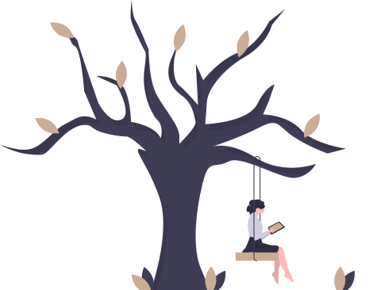

Psicologia Sistêmica
A Terapia Relacional Sistêmica tem o olhar voltado para os sistemas humanos e busca compreende o sujeito em relação.
Sendo assim, baseia-se nos pressupostos da complexidade, da instabilidade e da intersubjetividade.
O pensamento sistêmico é contextual, pois entende que a análise das partes não explica o todo. E o mundo é visto como uma teia dinâmica de eventos interrelacionados (Vasconcellos, 2010).